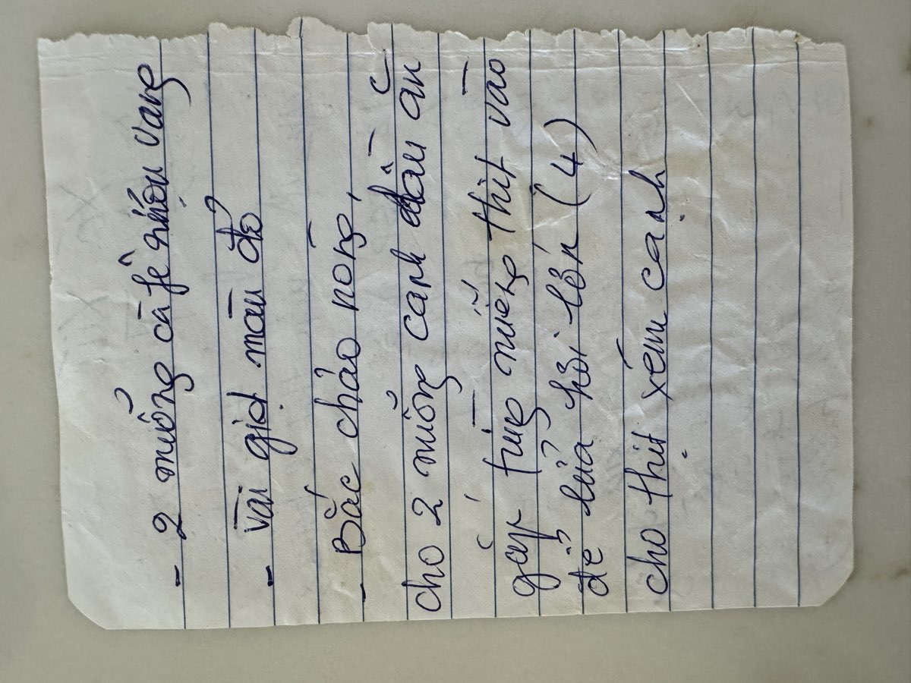

← Back to recipes

Xá Xíu
Vietnamese Char Siu BBQ Pork
From Mẹ — Oanh
Nguyên liệu · Ingredients
Thịt · Meat
- 4–5 lbs pork belly or pork shoulder, cut into long strips about 2 inches wide
Ướp · Marinade
- 12 teaspoons salt
- 7 teaspoons sugar
- 2 teaspoons MSG (bột ngọt)
- 12 teaspoons meat tenderizer
- 2 teaspoons chicken bouillon powder
- 2 teaspoons char siu powder (bột xá xíu)
- 9 teaspoons five-spice powder (ngũ vị hương)
- ¼ cup sesame oil
- ¼ cup cooking oil
- 3 tablespoons oyster sauce
- 6 tablespoons soy sauce
- 3 tablespoons red water (nước màu đỏ — red food coloring mixed with water)
- 1 teaspoon turmeric powder
- Red food coloring (for the signature char siu color)
Cách làm · Instructions
- Cut the pork into long strips, about 2 inches wide and 1 inch thick. This is a big-batch recipe — Mẹ always made a lot because xá xíu is good for days and goes with everything.
- Mix all the marinade ingredients together in a large bowl: salt, sugar, MSG, meat tenderizer, chicken bouillon, char siu powder, five-spice, sesame oil, cooking oil, oyster sauce, soy sauce, red water, turmeric, and red coloring. Stir until everything is dissolved and combined.
- Add the pork strips to the marinade. Massage it in with your hands, making sure every piece is thoroughly coated. Cover and refrigerate for at least 2 hours — overnight is even better. The tenderizer and five-spice need time to work their way in.
- When ready to cook, heat a large wok or heavy skillet over medium-high heat. Add a little oil. Sear the pork strips on all sides until deeply caramelized and charred at the edges — this is where the name comes from, "char siu" means fork-roasted.
- Reduce heat to medium. Continue cooking, turning the strips every few minutes, basting with any remaining marinade. Cook for about 30–40 minutes total, until the pork is cooked through and the exterior is lacquered and deeply red.
- Let the pork rest for 10 minutes, then slice against the grain into thin pieces. The inside should be tender and juicy, the outside sticky and caramelized.
- Serve over steamed rice, in bánh mì, or alongside wonton noodle soup. Mẹ always kept xá xíu in the fridge — it was the answer to every "what should we eat?" throughout the week.
Công thức gốc · Original handwritten recipe

❦
A recipe from Mẹ's kitchen